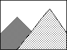
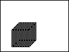
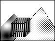
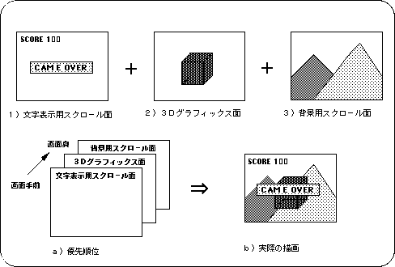

★SGL User's Manual
★PROGRAMMER'S TUTORIAL
★SGL User's Manual
★PROGRAMMER'S TUTORIAL
スクロールとは、主にゲームの背景や文字表示に用いる２Ｄグラフィックスを指します。 ＳＧＬにおける２Ｄグラフィックスにはこの他に、スプライトと呼ばれるものもありますが、 スプライトは主に動体表現に、スクロールは主に静止物体の表現に用いられます。
 | ＋ |  | ＝ |  |
|---|---|---|---|---|
| a)スクロール(背景) | b)ポリゴン(移動体) | c)実際の描画 |
注）この例ではスクロールをポリゴン面の後ろに表示しました。
＜図8-2 画面構成例＞

★SGL User's Manual
★PROGRAMMER'S TUTORIAL